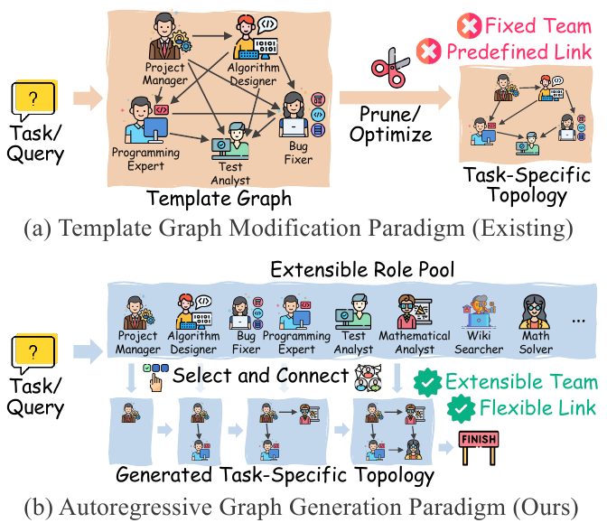
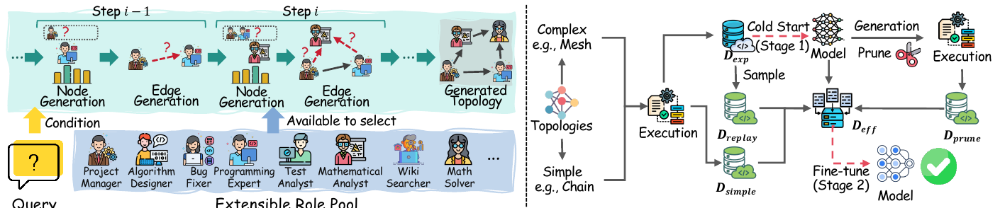
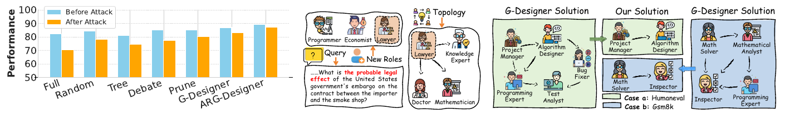
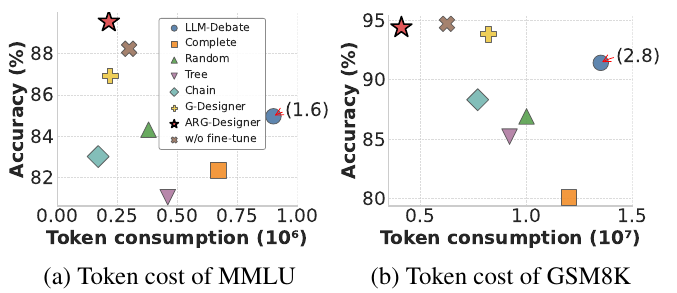

论文阅读笔记：Assemble Your Crew（ARG-Designer）¶
论文：Assemble Your Crew: Automatic Multi-agent Communication Topology Design via Autoregressive Graph Generation 作者：Shiyuan Li, Yixin Liu, Qingsong Wen, Chengqi Zhang, Shirui Pan（AAAI 2026 Oral） 链接：arXiv:2507.18224 · 代码 配图：下文图片均截取自原论文，论文以 CC BY 4.0 许可发布，版权属原作者。
本笔记按"我读的时候提的问题"来组织：每个关键点先给论文怎么说，再记下当时的疑问和结论，最后对照代码。凡是写着"（代码核对）"的地方，都是我读了仓库代码后得到的判断；标"待核实"的是还没验证的。
0. 一页纸看懂¶
一句话：以前的方法是"先摆一张满编大图，再剪边"；这篇论文改成"像招人组队一样，从零开始一个一个加 agent，并决定它和已有成员怎么连线"。
| 以前（模板图修改） | ARG-Designer（自回归生成） | |
|---|---|---|
| 起点 | 一张预设的大图（固定成员、固定连线） | 空图 |
| 操作 | 剪边 / 调权重 | 逐步加节点、加边 |
| agent 数量 | 固定 | 模型自己决定（选到 END 就停） |
| 角色 | 固定一套 | 从"可扩充的角色池"里挑 |
| 训练数据 | 不需要标准图 | 自动造（冷启动 + 精简两轮） |
读之前先说明几个初学者容易混的点：
- 被训练的模型是一个很小的 GRU 网络，不是大语言模型；
gpt-4o之类只是团队里"干活的 agent"，不被训练。 - 训练数据是 （题目，一张协作图），不是（题目，答案）。
- 论文里说的"两个阶段（Stage 1 / Stage 2）"指两轮训练；仓库 README 里的"三阶段"指三个脚本（造数据、训练、评测）。两者不是一回事。
1. 要解决的问题：模板图修改范式有两个缺陷¶

（原论文 Figure 1）上：现有方法从一张预设模板图出发剪枝；下：本文方法从角色池里一步步选择并连线。
论文指出模板修改范式有两个问题：
- 缺陷 1：冗余组成。 为了灵活，模板图往往塞进很多角色、连很多边，其中大部分对某道具体题目没用。剪枝也剪不干净，既浪费 token，也可能干扰决策。
- 缺陷 2：难以扩展。 模板是在固定角色集合上训练的。新出现一种 agent 能力时，要么重训，要么把模板做得极大再剪，代价过高。
我的理解：缺陷 1 是"人太多"，缺陷 2 是"人换不了"。自回归生成对应地解决它们：不预先放人（所以不会冗余），角色用"检索"的方式选（所以新角色可以加）。
2. 问题形式化¶
2.1 把 MAS 看成协作图¶
一个多智能体系统（MAS）被建模为有向无环图（DAG）：
- 节点 \(v_i\)：一个 agent，本质是一个带有角色 \(r_i\in\mathcal{R}\) 和内部状态 \(s_i\) 的 LLM 实例。
- 边 \(e_{ji}=(v_j,v_i)\)：\(v_j\) 的输出要传给 \(v_i\)。
- \(N_{\text{in}}(v_i)=\{v_j\mid (v_j,v_i)\in E\}\)：\(v_i\) 的所有"上游"。
2.2 协作协议：图怎么跑起来¶
按拓扑排序依次激活 agent（保证一个 agent 运行时，它的上游输出都已就绪），共进行 \(K\) 轮。第 \(k\) 轮里 agent \(v_i\) 的输出是
即：提示词由"自己的角色和记忆 + 题目 \(Q\) + 上游 agent 上一轮的输出"拼成。最后由聚合函数得到答案：
聚合可以是多数投票、交给某个终结 agent，或取最后一个 agent 的输出。
对照代码（代码核对）：这部分在
mas_framework/graph/graph.py的Graph.run里，用入度队列做拓扑排序；"终结 agent"对应代码里的decision_node（HumanEval 用FinalWriteCode）。论文实验设 \(K=3\)，但我看到的 HumanEval 脚本里num_rounds默认/写死为 1，需要在其他数据集脚本里再确认。
2.3 设计目标：学一个"条件生成模型"¶
直接在所有图里搜索"最好的图"代价太高。论文改为学习一个条件分布，取最可能的图：
2.4 自回归分解：一次只做一个简单决定¶
- \(G_{<i}\)：已经搭好的前 \(i-1\) 个节点的"半成品图"。
- 外层乘积：一个一个加节点；内层乘积：对新节点，逐个决定和前面每个节点之间有没有边。
- "什么时候停"：模型学会采样一个特殊的
END符号。
阅读提示：这个公式的"套路"和语言模型一样，把联合概率拆成一串条件概率；区别只是"每一步选的东西"从"下一个词"换成了"下一个角色 + 它的连边"。
3. 模型结构：一个层级 GRU¶

（原论文 Figure 2）左 (a)：生成过程，每一步先"节点生成"再"边生成"，候选来自可扩充的角色池；右 (b)：训练过程，两阶段数据。
3.1 先回答一个最常见的疑问¶
Q：最后是一个 GRU，GRU 能生成文本吗？
A：GRU 在这里完全不生成文本。 它的输入是一个数字向量（题目被冻结的句向量模型压缩而成），输出是"选哪个角色、连不连边"这样的离散选择。写文字和代码的是团队里的 LLM。可以把 ARGDesigner 看成"排兵布阵的指挥官"，LLM 是"上场的士兵"。
GRU 是一种循环网络，每步读入输入 \(x_t\)，结合上一步记忆 \(h_{t-1}\) 更新记忆：\(h_t=\mathrm{GRU}(x_t,h_{t-1})\)。它吐出什么，取决于后面接什么分类层：接词表就是语言模型，接角色池就是选角色。
语言模型生成文本 ARGDesigner 生成图 每步选什么 下一个词 下一个角色（或 END）候选集合 几万个词 角色池（HumanEval 只有 5 个角色）+ END概率 \(P(w_t\mid w_{<t})\) \(P(v_i\mid G_{<i},Q,\mathcal{R})\) 为什么偏偏用 GRU？ 论文给的理由是 GRU 擅长序列、计算量小。结合场景，我的理解还有：序列极短（十来个 agent）、训练数据极少（几十条）、设计团队这一步不该再花大模型的钱。论文的相关工作里还点名了 GraphRNN（You et al. 2018）等"自回归图生成"的前人工作，ARG-Designer 属于这条路线。
3.2 输入表示¶
题目 \(Q\) 和每个候选角色 \(r_k\) 都先用同一个预训练句向量模型（实验里是 all-MiniLM-L6-v2，\(d=384\)）编码：
所有角色向量堆成矩阵 \(Z\in\mathbb{R}^{|\mathcal{R}|\times d}\)，是"可选人员的知识库"。
3.3 节点生成器：选下一个角色¶
第一步，历史向量：用一个 GRU 把已选角色的向量压成一个向量：
第二步，用"门"混合历史和题目：
\(g_i\) 是 0 到 1 的数：历史和题目越"相关"，题目的权重越大。
第三步，更新节点级记忆（\(f_{\text{edge}}^{(i)}\) 编码上一个节点的连边模式）：
第四步，选角色（度量学习式检索）：
Q：角色是离散的，向量是连续的，所以这是个分类任务吗？向量怎么和角色对应？
A：是分类，但不是普通分类。
- 离散 → 连续：查表。每个角色有一个向量（由它的文字描述编码得到）。
- 连续 → 离散：算相似度 → softmax 变概率 → 抽样出一个整数编号，再用
id_to_role查出角色名。普通分类的最后一层是 \(\text{logits}=Wh+b\)，\(W\) 的每一行是"该类的模板"，是训练出来的参数，类别数 \(K\) 一旦定了就不能变。 这里没有"每类模板"这个参数矩阵：GRU 先输出一个"我想要什么样的角色"的向量 \(q^{(i)}\)，每个候选的模板 \(r_k=\mathrm{MLP}_{\text{role}}(z_k)\) 是由它的文字描述现算出来的，打分是点积 \(s_k=q^{(i)}\cdot r_k\)。这叫度量学习 / 检索式分类。
类比：普通分类是"答题卡"，选项印死了；这里是"挑名片"，心里有理想人选的画像，拿桌上每张名片去比对，最像的胜出，桌上多放一张名片就能参与比较。
玩具例子（二维向量，\(q=(0.9,0.1)\)）：
候选 向量 \(r_k\) 点积 softmax 项目经理 \((1,0)\) \(0.9\) \(0.41\) 程序员 \((0,1)\) \(0.1\) \(0.19\) 测试员 \((0.7,0.7)\) \(0.7\) \(0.34\) END\((-1,-1)\) \(-1.0\) \(0.06\) 然后按概率抽样（代码里是
torch.multinomial，不是直接取最大）。
3.4 边生成器：新节点连谁¶
新节点 \(v_i\) 确定后，另一个 GRU 逐个检查前面的节点 \(v_1,\dots,v_{i-1}\)，决定"要不要接收它的输出"。边 GRU 的初始状态来自节点级 GRU：
其中 \(\mathbf{e}^{(j-1,i)}\) 是上一个连边决定的 one-hot 向量。这就是"层级"的含义：节点 GRU 在外层，边 GRU 在内层。
4. 新角色从哪来？¶
Q：新角色怎么生成？
A：ARGDesigner 不"生成"角色，它只从角色池里选。 角色池由人（加 LLM）设计：论文实现细节里说用 GPT-4 来生成这些角色档案（profile pool）。
角色在技术上是什么？ 就是一个名字加一段描述文字。HumanEval 的角色池是手写字典
ROLE_DESCRIPTION，只有 5 个角色：Project Manager、Algorithm Designer、Programming Expert、Test Analyst、Bug Fixer。agent 的类（CodeWriting）是通用的，不同角色的唯一差别就是系统提示词不同（system_prompt = self.constraint）。同一段文字被用了两次：① 编码成向量，让 ARGDesigner 比较、选择；② 当作系统提示词，告诉 LLM "你是谁"。所以向量表示的正是 agent 实际被告知的那段话。
加一个新角色（如 "Lawyer"）要做的事：
- 写一段描述（人写，或让 LLM 写）；
- 登记进角色字典，agent 才能把它当系统提示词；
- 算向量，追加到矩阵：\(Z\leftarrow\begin{bmatrix}Z\\ z_{\text{Lawyer}}^{\top}\end{bmatrix}\)；
- 照常生成。
为什么没训练过也可能被选中¶
论文的"可扩展性讨论"：因为选角色用的是相似度检索而不是固定维度的分类头，所以推理时直接给 \(Z\) 追加新行即可，无需重训。题目是法律题时，GRU 输出的 \(q\) 指向"法律相关"，而新角色的向量天然在这一区域，点积大，就有机会被选中。

（原论文 Figure 4）(a) 提示词注入攻击下的性能；(b) MMLU 上加入新角色 Lawyer 后，模型把律师放在图的核心；(c) 与 G-Designer 的案例对比。
⚠️ 保持怀疑
- 证据偏弱：我看到的段落里，扩展性只有 MMLU 上一个法律题的定性案例（图 4b），没有对多个新角色做系统的量化实验。"能用"有一个例子，"总是好用"没有被证明。
- 取决于泛化：新角色的向量要经过只在旧角色上训练过的 \(\mathrm{MLP}_{\text{role}}\)，对没见过的向量怎么变换，没有保证。
- （代码核对）仓库里没有现成的"新增角色"接口：角色矩阵在初始化时按训练时的角色表建好，并随权重一起保存。想加新角色，需要自己重建矩阵，并保证
role_to_id、id_to_role、ROLE_DESCRIPTION三处一致。我读了代码，但没有实际跑过。
5. 训练：课程学习与两轮数据¶
（再看 Figure 2(b)）复杂拓扑 → 执行 → \(D_{exp}\)（冷启动，Stage 1）；再生成并剪枝、加简单拓扑、重放 → \(D_{eff}\)（精简微调，Stage 2）。
5.1 阶段一：冷启动数据集（D_exp）¶
- \(c\)：配置蓝图，如（拓扑=网状，人数=4，角色池）。
- \(G(c)\)：按蓝图确定性建出来的图。
- \(S(Q,G)\in\{0,1\}\)：这张图做对题目就是 1。
Q：标准答案是 LLM 生成很多个，再用 benchmark 选出最优的吗？
A：不是，有两处要纠正。
- 团队图不是 LLM 生成的，是人写的规则 + 随机角色。 拓扑和人数由
get_unique_complex_configs_*()写死，每个 agent 的角色是random.choices(角色池, k=人数)随机抽的；LLM 只在团队里"干活"（写代码、推理）。- 没有"选出最优"，只有"过滤出成功"。 每道题 × 每种配置只跑一次，做对就保存，做错就丢。同一道题可能有多张图都做对，都留下。所以这些图是"能行"的，不是"最优"的。
这个"标准答案"有两处不可靠：① 有运气成分（LLM 输出会变，一次做对不代表团队真合适）；② 做对不等于每个成员都有用。这正是论文要再做一轮"效率微调"的原因。
一条训练样本 = （题目文字，一张"角色 + 连边"的图）。不包含 GPT 的回答或代码答案。
（代码核对）训练数据不在仓库里：仓库只有题库（
datasets/*.jsonl），训练数据要运行cold_start_*.py生成。按 README 的命令，HumanEval 训练题 \(4\times10=40\) 道，其中 40% 即 16 道用来造冷启动数据，冷启动 5 种配置最多产生 \(5\times16=80\) 张图，过滤后更少。数据规模很小，论文也说只用 40 到 60 道题训练。
为什么用复杂的图起步？ 复杂图沟通充分，更容易做对，能攒到更多成功样本。论文称之为解决冷启动（cold start）问题：先让模型学到"组队的基本套路"。
5.2 阶段二：效率数据集（D_eff）¶
| 部分 | 含义 | 为什么需要 |
|---|---|---|
| \(\mathcal{D}_{\text{simple}}\) | 手工验证过的天然精简配置（链、星形、分层）生成的图 | 提供"够用就好"的正面例子 |
| \(\mathcal{D}_{\text{pruned}}\) | 取第一阶段模型生成的臃肿图，系统地删节点或边，删完仍成功的保留 | 让模型从自己的输出里学会精简 |
| \(\mathcal{D}_{\text{replay}}\) | 从 \(\mathcal{D}_{\text{exp}}\) 随机抽一部分 | 防止灾难性遗忘 |
Q：\(\mathcal{D}_{\text{simple}}\) 怎么得到？"天然精简"和预训练阶段用的框架有什么区别？
A：用的是完全同一个 MAS 框架（
Graph类），区别只在连边方式和人数。
冷启动（预训练用） \(\mathcal{D}_{\text{simple}}\) 拓扑 FullConnected、MeshChain、Star、Layered人数 3 到 5 2 到 5 题目 base那一批finetune那一批建图、判分、保存 同一套代码 同一套代码 "精简"省在边的数量：每条边意味着一个 agent 要读另一个 agent 的完整输出，这些文字都进提示词，多花 token。实际建出的边数（有向无环）约为
\[ \underbrace{\binom{N}{2}=\frac{N(N-1)}{2}}_{\text{全连接}}\quad\text{对比}\quad\underbrace{N-1}_{\text{链、星形}} \]例如 \(N=5\)：全连接 10 条边，链或星形只有 4 条。
5.3 训练目标¶
最大化标准图的对数似然（负对数似然损失），并拆成节点和边两项加权：
训练用 teacher forcing：每一步都喂标准图的真实历史，而不是模型自己上一步的预测，这样训练更稳更快。
两轮训练：先在 \(\mathcal{D}_{\text{exp}}\) 上冷启动训练，再在 \(\mathcal{D}_{\text{eff}}\) 上用更低的学习率微调（代码里 \(8\times10^{-5}\to1\times10^{-5}\)）。
6. 推理：Algorithm 1¶
给定新题目 \(Q\)，不需要任何标准答案，从空图开始：
- 采样角色 \(r_i\sim P_\theta(v_i\mid G_{<i},Q)\)；
- 若 \(r_i=\texttt{END}\) 或 \(i>N_{\max}\)，停止；
- 否则加入节点 \(v_i\)；
- 对 \(j=i-1,\dots,1\)，采样边 \(b_{ji}\sim P_\theta(e_{ji}\mid v_i,G_{<i},Q)\)，\(b_{ji}=1\) 就加边；
- \(i\leftarrow i+1\)，回到 1。
（代码核对）真实代码比伪代码多了不少"修补逻辑"（
ARGDesigner.sample）：前min_num_node（默认 2）步禁止选END；若新节点一条入边都没有，随机补一条；有环就删边；图不连通就强行连起来；孤立点也随机连一个。这些在论文里没有提，但会影响最终生成的图，复现时要知道。待 L07 逐行核实。
7. 实验结果¶
7.1 六个基准上的准确率（Table 3）¶
| 方法 | MMLU | GSM8K | AQuA | MultiArith | SVAMP | HumanEval | 平均 |
|---|---|---|---|---|---|---|---|
| Vanilla | 80.39 | 82.30 | 71.06 | 93.09 | 86.55 | 71.39 | 80.80 |
| CoT | 81.69 | 86.50 | 73.58 | 93.25 | 87.36 | 74.67 | 82.84 |
| SC (CoT) | 83.66 | 81.60 | 75.63 | 94.12 | 88.59 | 79.83 | 83.91 |
| Chain | 83.01 | 88.30 | 74.05 | 93.27 | 87.17 | 81.37 | 84.53 |
| Tree | 81.04 | 85.20 | 71.23 | 93.68 | 88.91 | 80.53 | 83.43 |
| Complete | 82.35 | 80.10 | 72.95 | 94.53 | 84.01 | 79.03 | 82.16 |
| Random | 84.31 | 86.90 | 76.48 | 94.08 | 87.54 | 82.66 | 85.33 |
| LLM-Debate | 84.96 | 91.40 | 77.65 | 96.36 | 90.11 | 84.70 | 87.53 |
| AgentPrune | 85.07 | 91.10 | 80.51 | 94.65 | 90.58 | 86.75 | 88.09 |
| AgentDropout | 85.62 | 91.70 | 80.94 | 95.60 | 91.04 | 85.98 | 88.48 |
| G-Designer | 86.92 | 93.80 | 81.60 | 96.50 | 93.10 | 88.33 | 90.04 |
| ARG-Designer | 89.54 | 94.40 | 86.45 | 98.93 | 95.63 | 91.74 | 92.78 |
（数字转录自原论文 Table 3，指标：MMLU/GSM8K/AQuA/MultiArith/SVAMP 为准确率，HumanEval 为 Pass@1。）
读表的几个观察：
- 在 AQuA 上比最强的学习型基线 G-Designer 高 \(86.45-81.60=4.85\) 个点。
- 把"全连接（Complete）"和"链（Chain）"对比：边更多反而不一定更好（GSM8K 上 Complete 80.10 低于 Chain 88.30），说明沟通不是越多越好，这正是"自适应拓扑"的动机。
7.2 Token 效率（Figure 3）¶

（原论文 Figure 3）横轴是 token 消耗，纵轴是准确率；左上角越好。星形为 ARG-Designer，叉号为不做精简微调的变体。
- 论文文字：GSM8K 上 ARG-Designer 只用约 \(4.1\times10^{6}\) token 就达到 94.40%，比 G-Designer 约少一半 token。
- 精简微调的价值：MMLU 上，微调把准确率从 88.23% 提到 89.54%，同时 token 少了近 30%；GSM8K 上 token 从 \(6.25\times10^{6}\) 降到 \(4.1\times10^{6}\)。
7.3 消融实验（Table 4）¶
| 变体 | MMLU | GSM8K | HumanEval | 平均 |
|---|---|---|---|---|
| Vanilla | 80.39 | 82.30 | 71.39 | 78.02 |
| ARG-Designer | 89.54 | 94.40 | 91.74 | 91.89 |
| w/o fine-tune | 88.23 | 94.70 | 90.91 | 91.28 |
| w/o task emb. | 86.93 | 93.10 | 89.26 | 89.76 |
| w/o hist. emb. | 88.23 | 93.60 | 90.08 | 90.64 |
- 去掉题目向量 \(f_Q\) 掉得最多（平均 91.89 → 89.76），说明"根据题目定制"最关键。
- 去掉精简微调，准确率几乎不变（GSM8K 上甚至略高：94.70 对 94.40），但 token 多得多。所以精简微调主要买的是效率，不是准确率。
- 去掉历史向量也会下降，说明"已选了谁"对后续决策有用。
7.4 鲁棒性与案例（Figure 4a、4c）¶
- 提示词注入攻击：往某个 agent 的系统提示词里注入干扰，固定拓扑的 MAS 性能明显下降，ARG-Designer 下降最小（2.15%）。论文解释为训练目标"鼓励风险分散、冗余路径"的结构。
- 案例（图 4c）：G-Designer 的解永远在固定模板内；ARG-Designer 会根据题目调整人数和连线（HumanEval 题用 2 个 agent，GSM8K 题也只用 2 个）。
8. 论文 vs 代码：我发现的差异清单¶
这些是读代码时发现的，复现或二次开发前要心里有数。标"待核实"的我还没有实际运行验证。
| # | 论文 | 代码 | 影响 |
|---|---|---|---|
| 1 | 门控 \(g_i=\sigma\big(\frac{f_{\text{hist}}\cdot f_Q}{\sqrt{d}}\big)\) | sigmoid(sum(h*t)/embedding_dim)，除的是 \(d\) 而不是 \(\sqrt d\) |
门更"钝"，轻微数值差异 |
| 2 | \(z_{\text{end}}\) 是可学习嵌入 | START/END 向量初始为全零，放在 register_buffer；但会经过带偏置的 role_processor，所以间接可学 |
实现方式不同，效果待核实 |
| 3 | 损失是 NLL，\(-\log P\) | F.binary_cross_entropy(softmax输出, one-hot)。对 one-hot 目标，展开为 \(-\log p_y-\sum_{k\neq y}\log(1-p_k)\)，第一项正是 NLL，多了对错误类别的惩罚项 |
优化方向一致，但不是严格的 NLL |
| 4 | 边概率用 Sigmoid（式 15） | 边输出层是 MLP_Softmax，采样时取"有边"那一维（待 L06 核实维度） |
数学上等价于二分类，写法不同 |
| 5 | \(\alpha=0.2\) 是超参数 | 在 forward 里写死 alpha = 0.2 |
想调要改源码 |
| 6 | 推理算法 1 很简洁 | 有"至少一条入边、去环、连通修复、孤立点连接、最少节点数"等修补 | 最终图并不完全等于模型采样结果 |
| 7 | 数据构造里"系统地删除节点或边" | 代码里只随机删 25% 的边，没有删节点，且删后会再强行连通 | 实现比论文简单 |
| 8 | 协作轮数 \(K=3\) | HumanEval 脚本里 num_rounds=1（待在其他数据集脚本核实） |
复现实验设置可能不一致 |
| 9 | 冷启动配置含 Mesh | generate_mesh_graph 只有 \(N>4\) 且 \(N\) 为完全平方数才是网格，\(N=4,5\) 时退化成全连接 |
冷启动实际只有全连接一种结构 |
| 10 | 角色池"可扩展" | 角色矩阵在 __init__ 里按训练时角色表建好、随权重保存，无现成的新增接口 |
要自己补工程 |
| 11 | — | finetune_*.py 里写死 /root/ARG-Designer/... 绝对路径，与 cold_start_*.py 的相对路径不一致 |
照 README 在本机跑会找不到数据 |
| 12 | — | 仓库没有 pyproject.toml、requirements.txt、Dockerfile、shell 脚本 |
环境要自己搭 |
9. 我从这篇论文学到的"读论文的方法"¶
- 先看图再看公式。 Figure 1 说清动机，Figure 2 说清流程，公式只是把图写成数学。
- 把每个公式落到一个函数。 如表格里"论文符号 ↔ 代码模块"的对应，是读陌生仓库最有效的办法。
- 凡是"论文没写"的修补逻辑，都要问为什么。 它们往往决定了能不能复现。
- 对"可扩展""鲁棒"这类定性声明，找它的证据有多强。 这里是一个案例。
- 同一个词在不同地方可能指不同的东西（"阶段"就有三套编号），先列对照表再读。
- 区分"被训练的小模型"和"被调用的大模型"，很多 Agent 系统是两者分工。
10. 待办与存疑（后续课程里核实）¶
- L05：逐行对照节点生成器，验证第 1、2 项差异。
- L06：确认边输出的维度、损失的具体形式（第 3、4 项）。
- L07：核实
sample里most_similar_roles是否真的被使用（我读到的循环里算了但没用到）。 - 去其他数据集脚本里确认
num_rounds（第 8 项）。 - 想动手：用少量题目实际跑一遍
cold_start，打开一个.pt看看图长什么样。